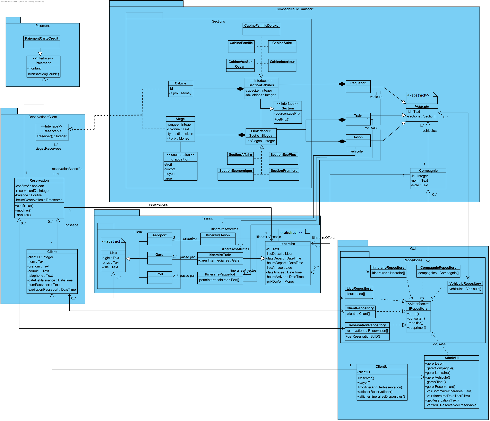
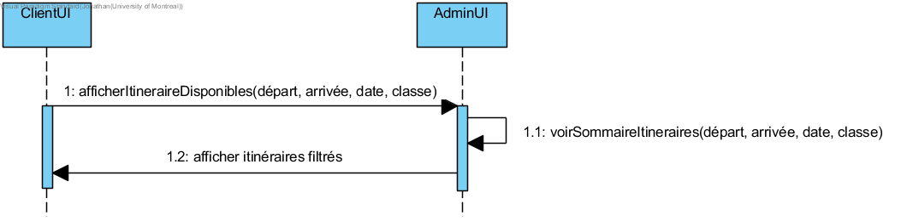
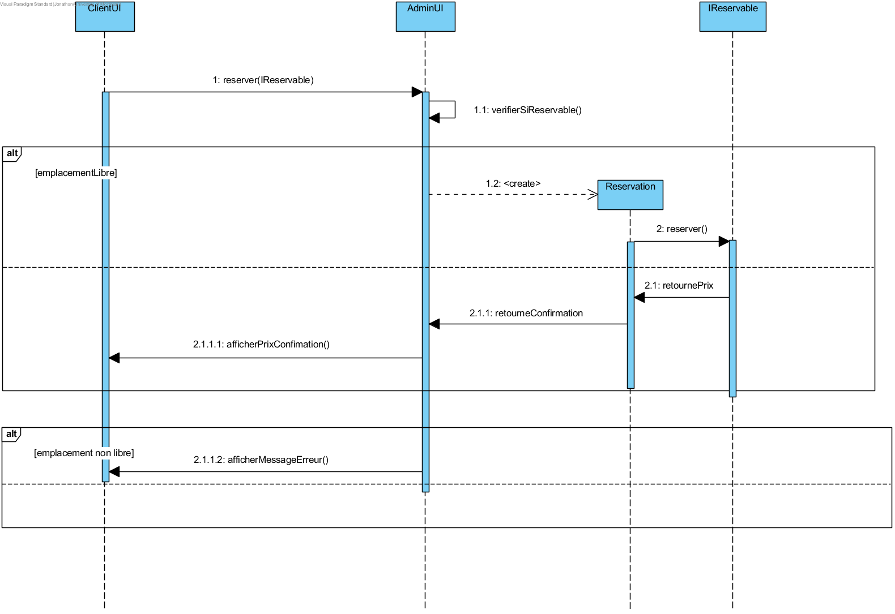
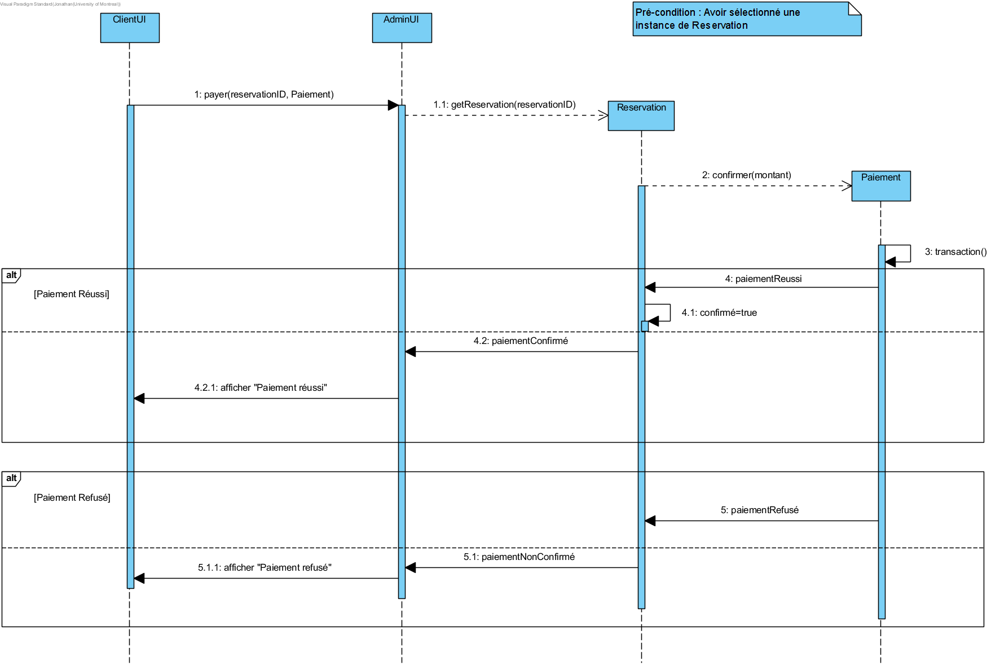
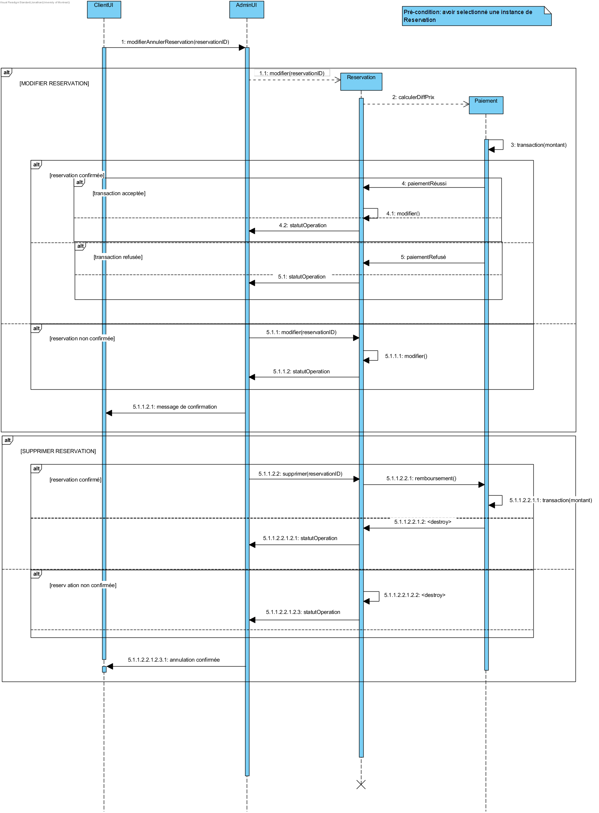
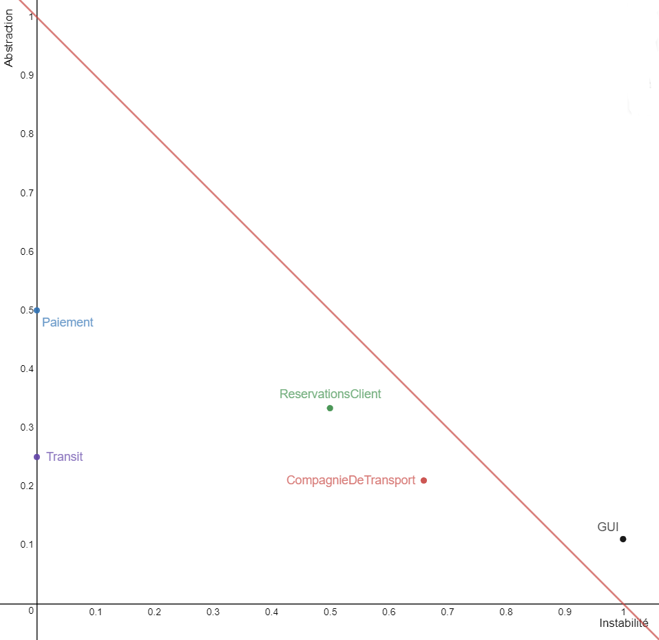

IFT 3911 - Devoir 2
Informations générales
Nom: Jonathan Caspar
Matricule (4 derniers chiffres): 9041
Courriel: jonathan.caspar@umontreal.ca
Temps passé: 30 heures
Nom: Johnny Pho
Matricule(4 derniers chiffres): 6014
Courriel: johnny.pho@umontreal.ca
Temps passé: 28 heures
Nom: Emna Ghannouchi
Matricule(4 derniers chiffres): 5141
Courriel: amna.ghannouchi@umontreal.ca
Temps passé: 28 heures
Distribution des tâches
Soumetteur: Jonathan Caspar
|
Tâches
|
Jonathan
|
Johnny
|
Emna
|
|
Diagramme de classe
|
33.33%
|
33.33%
|
33.33%
|
|
Diagrammes de séquence
|
25%
|
25%
|
50%
|
|
Diagramme de paquets
|
80%
|
10%
|
10%
|
|
Identifications des modules réutilisables
|
30%
|
40%
|
30%
|
|
Contraintes OCL
|
80%
|
10%
|
10%
|
|
Discussion du couplage et de la cohésion des modules
|
33.33%
|
33.33%
|
33.33%
|
|
Discussion du fardeau des classes
|
33.33%
|
33.33%
|
33.33%
|
|
Graphe IA et justification
|
20%
|
30%
|
50%
|
|
Justification de l'application des principes de conception
|
25%
|
35%
|
40%
|
Hypothèses
- Les avions possèdent toujours au moins une section (par défaut 1 section = intégralité des sièges/cabines qui composent l'avion).
- Un siège est considéré "libre lorsqu'il possède un attribut "reservationAssociée" nul.
- Un siège est considéré "réservé pour 24h" si sa "reservationAssociée" a la valeur de son attribut "Confirmé = False".
- Un siège est considéré "réservé définitivement" si sa "reservationAssociée" a la valeur de son attribut "Confirmé = True".
- Un client peut réserver plusieurs sièges/cabines pour une même réservation (même numéro de réservation) pour plusieurs sièges/cabines.
- Un client paye ou se faire rembourser le montant adéquat immédiatement après qu'il ait demandé une annulation ou une modification de réservation.
- La partie alphabétique (2 lettres) de l'identifiant d'un vol est déterminée par l'attribut "sigle" de la compagnie qui offre l'itinéraire/trajet.
Sommaire
Design Logiciel
Les projets .vpp contenant tous les diagrammes liés au design sont disponibles ici : le diagramme de classe et de paquets (lien) et les diagrammes de séquences (lien).
Tâche 1 : Diagramme de classe

Tâche 2 : Diagrammes de séquence
1) Vérifier les vols/itinéraires disponibles

2) Réserver un siège/cabine

3) Payer un siège/cabine

4) Annuler et changer une réservation

Tâche 3 : Diagramme de paquets

Tâche 4 : Identifications des modules réutilisables
Les modules à usage général sont :
- Module Paiement : très générique et s'utilise dans toutes les applications qui nécéssitent de faire des transactions. Il fait partie du domaine d'architecture.
- Module ReservationsClient : modélise un client, les réservations qui lui sont associées et les entités reservables. Cela fait partie du domaine métier et peut être réutilisé dans des applications qui utilisent un système de réservations.
- Module Lieux : modélise des emplacements physiques, ce module appartient au domaine de fondation, ce qui est donc applicable à beaucoup d'autres applications.
Tâche 5 : Contraintes OCL
La liste des contraintes OCL se trouve dans le fichier accessible ici.
1) Réserver ne peut se faire que pour un siège libre. Identifiez la postcondition de l'opération réserver().
context IReservable ::reserver()
pre: context.reservationAssocié->isNull()
post: context.reservationAssocié.reservationID = return
2) Le port de départ et d'arrivée doit être le même.
context ItinerairePaquebot
inv : self.lieuDepart = self.lieuArrivee
3) Un paquebot peut être assigné à plusieurs itinéraires tant qu'ils ne se chevauchent pas.
context Paquebot:
inv: not self.itinerairesAffectes->exists(i1, i2 | [ (i1.lieuDepart->union(i1.portsIntermediaires)) -> intersection (i2.lieuDepart->union(i2.portsIntermediaires)) ]->isEmpty())
Qualité du design
Tâche 6 : Discussion du couplage et de la cohésion des modules
Couplage:
-
Couplage d'heritage:
Les classes:
- PaiementCarteCredit et Paiement
- Lieu, Aeroport, Gare et Port
- Itinéraire, ItinéraireAvion, ItinéraireTrain et ItinérairePaquebot
- Vehicule, Paquebot, Train, Avion
Interagissent entres elles dans une hiérarchie d’héritage.
-
Couplage d'interaction:
- Couplage par contenu: on trouve ce type de couplage entre la classe (IRepository) et (ItineraireRepository, CompagnieRepository, VehiculeRepository, LieuRepository, ClientRepository, ReservationRepository). En effet, le contenu des classes qui implémentent l'interface IRepository est une référence directe
aux classes énoncés plus haut.
- Couplage par contrôle: on trouve ce type de couplage entre Client et ClientUI. On a
Client qui connait la structure et logique interne de ClientUI ce qui la rend peu ré-utilisable (avec fardeau = 11).
- Couplage par données: on utilise ce type de couplage dans presque tous les modules.
Tâche 7 : Discussion du fardeau des classes
-
Classes du domaine de fondation
- F(Money) = 0
- F(Text) = 0
- F(Integer) = 0
- F(disposition) = 0
- F(boolean) = 0
- F(Double) = 0
- F(Timestamp) = 0
- F(DateTime) = 0
- F(IRepository) = 0
-
L'interface IReservable a une association bidirectionnelle ce qui augmente son fardeau et oblige les classes qui l'implémentent à s'associer avec un objet Réservation (classe du domaine métier).
- ref(IReservable) = ref(Reservation) \ ref(IReservable)
- F(IReservable) = F(Reservation) + 1 - 1 = 7
-
Classe du domaine d'architecture avec un faible fardeau. Paiement s'occupe des transactions d'argent.
- ref(Paiement) = ref(Money) ∪ ref(Double)
- F(Paiement) = F(Money) + 1 + F(Double) + 1 = 2
-
Classe du domaine métier. Même interprétation que la classe IReservable
- ref(Reservation) = ref(boolean) ∪ ref(Integer) ∪ ref(Double) ∪ ref(Timestamp) ∪ (ref(IReservable) \ ref(Reservation)) ∪ ref(Paiement)
- F(Reservation) = F(boolean) + 1 + F(Double) + 1 + F(Timestamp) + 1 + F(Integer) + 1 + 1 + F(Money) + 1 + 1 = 7
-
Classe du domaine métier. Elle représente un client dans le système. Son fardeau ni faible ni élevé confirme la bonne conception de cette classe.
- ref(Client) = ref(Reservation) ∪ ref(Text) ∪ ref(DateTime)
- F(Client) = F(Reservation) + 1 + F(Text) + 1 + F(DateTime) + 1 = 10
-
Classe du domaine métier. Elle représente un siège dans le système. Son fardeau ni faible ni élevé confirme la bonne conception de cette classe.
- ref(Siege) = ref(disposition) ∪ ref(Text) ∪ ref(Money) ∪ ref(Reservation)
- F(Siege) = F(disposition) + 1 + F(Reservation) + 1 = 9
-
Classe du domaine d'application. Elle représente un ensemble de types de siège dans le système. Son fardeau ni faible ni élevé indique que la conception de cette classe peut être améliorée.
- ref(sectionSieges) = ref(Siege)
- F(sectionSieges) = F(Siege) + 1 = 10
-
Classe du domaine métier. Elle représente une cabine dans le système. Son fardeau ni faible ni élevé confirme la bonne conception de cette classe.
- ref(Cabine) = ref(Text) ∪ ref(Money) ∪ ref(Reservation)
- F(Cabine) = F(Reservation) + 1 = 8
-
Classe du domaine métier. Elle représente un ensemble de types de cabine dans le système. Son fardeau ni faible ni élevé confirme la bonne conception de cette classe.
- ref(sectionCabines) = ref(Cabine)
- F(sectionCabines) = F(Cabine) + 1 = 9
-
Classe du domaine métier. Interface et super-classe des interfaces sectionCabines et sectionSieges. Son fardeau ni faible ni élevé confirme la bonne conception de cette classe.
- ref(Section) = ref(sectionCabines) ∪ ref(sectionSieges)
- F(Section) = F(sectionSieges) + 1 + 1 = 12
-
Classe du domaine métier. Elle représente un paquebot dans le système. Son fardeau ni faible ni élevé confirme la bonne conception de cette classe.
- ref(Paquebot) = ref(sectionCabines)
- F(Paquebot) = F(sectionCabines) + 1 = 10
-
Classe du domaine métier. Elle représente un train dans le système. Son fardeau ni faible ni élevé confirme la bonne conception de cette classe.
- ref(Train) = ref(sectionSieges)
- F(Train) = F(sectionSieges) + 1 = 11
-
Classe du domaine métier. Elle représente un avion dans le système. Son fardeau ni faible ni élevé confirme la bonne conception de cette classe.
- ref(Avion) = ref(sectionSieges)
- F(Avion) = F(sectionSieges) + 1 = 11
-
Classe du domaine métier. Super-classe de Avion, Train et Paquebot. Son fardeau ni faible ni élevé confirme la bonne conception de cette classe.
- ref(Vehicle) = ref(Section)
- F(Vehicle) = F(Section) + 1 = 13
-
Classe du domaine métier. Compagnie regroupe les véhicules. Son fardeau élevé indique que la conception de cette classe peut être améliorée.
- ref(Compagnie) = ref(Vehicle) ∪ ref(Integer) ∪ ref(Text)
- F(Compagnie) = F(Vehicle) + 1 = 14
-
Classe du domaine d'architecture. Représentation d'un lieu. Son fardeau faible confirme la bonne conception de cette classe.
- ref(Lieu) = ref(Text)
- F(Lieu) = F(Text) + 1 = 1
-
Classe du domaine d'architecture. Aeroport, Gare et Port sont des sous-classe de Lieu. Leurs fardeaux faibles confirment la bonne conception de ces classes.
- ref(Aeroport) = ref(Lieu)
- F(Aeroport) = F(Lieu) + 1 = 2
- ref(Gare) = ref(Lieu)
- F(Gare) = F(Lieu) + 1 = 2
- ref(Port) = ref(Lieu)
- F(Port) = F(Lieu) + 1 = 2
-
Classe du domaine métier. Représente l'itinéraire d'un voyage (abstrait). Son fardeau ni faible ni élevé confirme la bonne conception de cette classe.
- ref(Itineraire) = ref(Lieu) ∪ ref(Text) ∪ ref(DateTime) ∪ ref(Money)
- F(Itineraire) = F(Lieu) + 1 + F(Text) + 1 + F(DateTime) + 1 + F(Money) + 1 = 5
-
Classes du domaine métier. ItineraireAvion, ItinerairePaquebot et ItineraireTrain sont des sous-classe de Itineraire. Leurs fardeaux ni faibles ni élevés confirment leurs bonnes conceptions.
- ref(ItineraireAvion) = ref(Itineraire) ∪ ref(Aeroport) ∪ (ref(ItinerairePaquebot) \ ref(ItineraireAvion))
- F(ItineraireAvion) = F(Itineraire) + 1 + 1 + 1 + 1 = 9
- ref(ItinerairePaquebot) = ref(Itineraire) ∪ ref(Port) ∪ (ref(ItineraireAvion) \ ref(ItinerairePaquebot))
- F(ItinerairePaquebot) = F(Itineraire) + 1 + 1 + 1 + 1 = 9
- ref(ItineraireTrain) = ref(Itineraire) ∪ ref(Gare)
- F(ItineraireTrain) = F(Itineraire) + 1 + 1 = 7
-
Classes du domaine d'architecture. LieuRepository est bien conçu au vu de son faible fardeau. Le reste des classes *Repository ont un fardeau trop élevé car, en tant que base de données, elles stockent des objets de classe du domaine métier.
- ref(ItineraireRepository) = ref(Itineraire)
- F(ItineraireRepository) = F(Itineraire) + 1 = 6
- ref(CompagnieRepository) = ref(Compagnie)
- F(CompagnieRepository) = F(Compagnie) + 1 = 15
- ref(VehicleRepository) = ref(Vehicle)
- F(VehicleRepository) = F(Vehicle) + 1 = 14
- ref(LieuRepository) = ref(Lieu)
- F(LieuRepository) = F(Lieu) + 1 = 2
- ref(ClientRepository) = ref(Client)
- F(ClientRepository) = F(Client) + 1 = 11
- ref(ReservationRepository) = ref(Reservation)
- F(ReservationRepository) = F(Reservation) + 1 = 8
-
Classes du domaine d'application. ClientUI et AdminUI sont les classes de contrôle (et interface graphique) du système. Leurs fardeaux ni faibles ni élevés indiquent que la conception de ces classes peut être améliorée.
- ref(AdminUI) = ref(IReservable) ∪ ref(Text) ∪ ref(Filtre)
- F(AdminUI) = F(IReservable) + 1 + F(Text) + 1 + F(Filtre) + 1 = 10
- ref(ClientUI) = ref(Client) ∪ ref(AdminUI)
- F(ClientUI) = F(Client) + 1 = 11
Tâche 8 : Graphe IA et justification

| Modules |
Instabilité |
Abstraction |
| Paiement |
0 |
1/2 = 0.5 |
| ReservationsClient |
0.5 |
1/3 = 0.33 |
| Transit |
0 |
2/8 = 0.25 |
| GUI |
1 |
1/9 = 0.11 |
| CompagnieDeTransport |
0.66 |
4/19 = 0.21 |
- Le module Paiement est parfaitement stable (Instabilité = 0) ce qui est normal puisqu'il
sera potentiellement utilisé par beaucoup d'autres modules : il se doit donc d'être très
générique (i.e. abstrait) pour l'extension future de modes de paiement, et il doit
fonctionner de façon indépendante (car appartient au domaine d'architecture). C'est
d'ailleurs le module qui a le plus d'abstraction (A=0.5) ce qui est normal puisqu’ elle est
invariante.
- Le module Transit est parfaitement stable (Instabilité = 0) et indépendant. Il est utilisé
par trois autres modules, il doit être ouvert aux extensions et il doit fonctionner de façon
indépendante (car appartient au domaine d'architecture). Son niveau d'abstraction
(A=0.25) ce qui la rend peu variante dans le design.
- Le module GUI est totalement instable (Instabilité = 1) cela s'explique par le fait qu’il
dépend de trois autres modules. Il est complètement dépendant des ces trois modules et a chaque modification de ces derniers, il y a un risque que le module GUI en soit affecté. Ce module appartient au domaine d'application, ce qui explique sa faible abstraction (c'est un module assez modifiable).
- Le module ReservationClient a une instabilité de 0.5 : cela s'explique par le
fait qu'il dépend de deux autres modules, d'ailleurs il appartient au domaine métier.
Il présente une abstraction ce qui est normal, vu que c'est un module qui est directement
impacté par deux autres modules.
- Le module CompagnieDeTransport a une instabilité de 0.66 : cela s'explique par le fait
qu'il dépend de deux autres modules, d'ailleurs il appartient au domaine métier. Il doit
être variant mais il présente une abstraction de 0.21, c'est un viol de OCP.
-
La relation entre la stabilité (axe horizontal) et l’abstraction (axe vertical) nous montre que tous
nos paquets sont en dessous de la main sequence, mais pas dans la zone of pain.
- paquet Paiement avec D = |0.5 + 0 - 1| = 0.5
- paquet Transit avec D = |0 + 0.25 - 1| = 0.75 (trop élevé, module n'est pas assez abstrait)
- paquet GUI avec D = |1 + 0.11 - 1| = 0.11
- paquet ReservationClient D = |0.5 + 0.33 - 1| = 0.17
- paquet CompagnieDeTransport D = |0.66 + 0.21 - 1| = 0.13
De manière générale : chaque paquet dépend de paquets plus stables que lui et il n'y a aucune
dépendence cyclique dans les dépendances entre paquets (respect du "Acyclic Dependency Principle (ADP)").
Tâche 9 : Justification de l'application des principes de conception
-
Application de DIP : Dépendre des abstractions, pas des implémentations
-
IReservable/Reservation : L'objet Réservation est associé à un objet (abstrait) réservable (qui implémente l'interface IReservable). L'ajout d'un nouveau type d'entité réservable sera facilité (en faisant implémenter l'interface IReservable par le nouvel objet).
-
Cabine dépend d'une interface SectionCabines
-
Siege dépend d'une interface SectionSieges
-
Compagnie (possède) dépend d'une liste abstraite de Vehicule
-
Les classes LieuRepository, ItineraireRepository et VehiculeRepository dépendent de classes abstraites (car ces dernières sont susceptibles d'être étendues à l'avenir) qui sont respectivement les classes Lieu, Itineraire et Vehicule.
-
Réservation dépend d'une interface Paiement plutôt que d'un type de paiement concret.
-
Application de ISP : Plusieurs interfaces spécifiques pour chaque client valent mieux qu'une seule interface générale
-
SectionSieges / SectionCabines : on utilise une interface spéficique pour chacune des deux classes puisque les sections de type Cabine et rangées de Cabine ont des propriétés différentes.
-
Application de OCP : Une classe doit être ouverte à l'extension, mais fermée à la modification
-
Lieu, Itinéraire : possibilité d'ajouter de nouveaux lieux et types d'itinéraires par héritage de Lieu et Itinéraire
-
Véhicule : possibilité d'ajouter de nouveaux types de véhicules par héritage de Véhicule